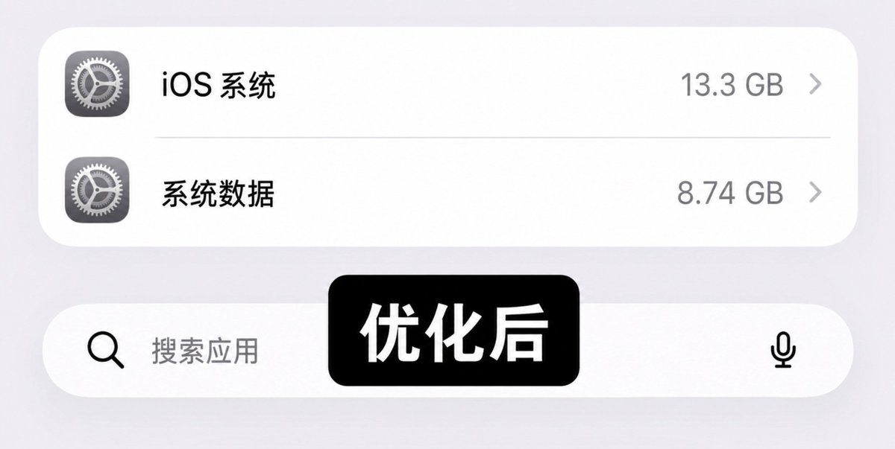
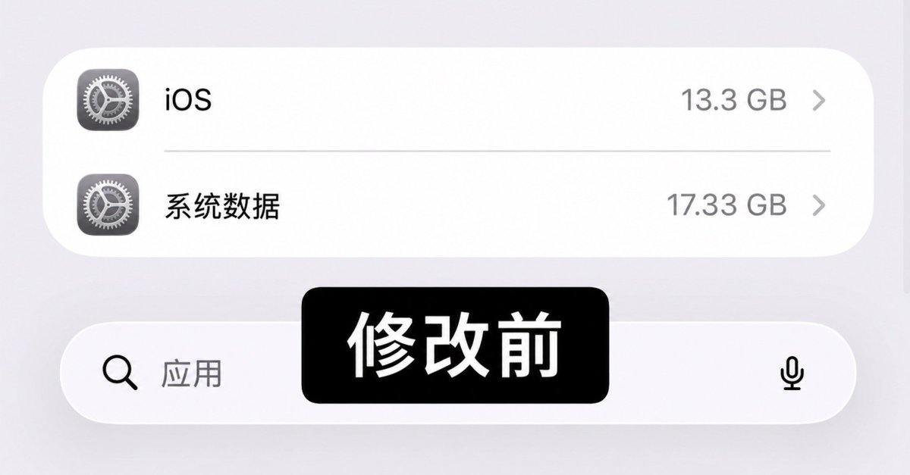

山田リョウ⛩️
@Yamada_Ryoooo
@laobaishare 没成功😭


老白（每日干货分享✊）
@laobaishare
iPhone 清存储野路子实测
太牛逼了，直接 10 个 G 起步⬇️
1. 打开飞行模式
2. 手动把日期改到 2027 年
3. 放着不动 2 分钟，别打开任何 app
4. 日期改回今天（恢复自动设置）
5. 关闭飞行模式
再去看存储，多出一大块。 https://t.co/9dkecRgGmP